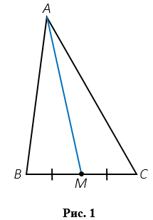
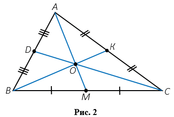

Медиана треугольника - это отрезок, который соединяет вершину треугольника с серединой противоположной стороны. На Рис.1 АМ - медиана треугольника АВС (соединяет вершину А с серединой стороны ВС точкой М, т.е. ВМ = МС).

Любой треугольник имеет три медианы. На Рис.2, АМ, ВК, СD - медианы треугольника АВС. Медиана АМ соединяет вершину А с серединой стороны ВС - точкой М (ВМ = МС), медиана ВК соединяет вершину В с серединой стороны АС - точкой К (ВК = КС), медиана СD соединяет вершину С с серединой стороны АВ - точкой D (АD = DB).

Замечательное свойство медиан треугольника: в любом треугольнике медианы пересекаются в одной точке. На Рис.2 медианы △АВС пересекаются в точке О. При этом, точка О делит каждую медиану в отношении 2 : 1, считая от вершины, т.е. АО : ОМ = ВО : ОК = СО : DO = 2 : 1.